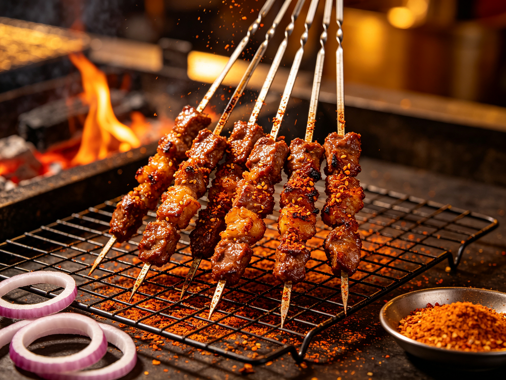

Cumin Lamb Skewers: The Night-Market Favorite You Can Grill at Home
Walk down any Chinese night market and the smell hits you first: charcoal smoke, cumin, and sizzling lamb fat. Yangrou chuan — Xinjiang cumin lamb skewers — are the single most-loved street food in China, and the good news is they're shockingly easy to recreate at home. All you need is good lamb, the right spice rub, and heat high enough to scare a fire alarm.
Why Everyone Loves These
The magic isn't complex — it's contrast. Lamb fat renders and sizzles against the charcoal, while a heavy dusting of toasted cumin and chile hits warm, earthy, and gently spicy. The result is juicy on the inside, crisp-edged on the outside, and deeply savory. Unlike a lot of Chinese street food, this one was born for the grill, so it translates perfectly to a Western backyard barbecue.
The Ingredients
- Lamb shoulder or leg — 500 g / 1 lb, cut into bite-size cubes. Shoulder has the right fat-to-meat ratio; avoid lean leg alone.
- Cumin — 2 tablespoons whole cumin seeds, toasted and lightly crushed. Whole seeds, not just ground, are non-negotiable for the real flavor.
- Chile flakes — 1-2 teaspoons, to taste. Gochugaru or a mild dried chile works well.
- Salt — fine sea salt, for seasoning and finishing.
- A little oil — to help the rub stick and the fat render.
- Metal or soaked wooden skewers — metal conducts heat and cooks the center better.
The Method
1. Cut and season simply
Cut the lamb into even 2-3 cm cubes and thread them onto skewers with a little space between pieces so heat and smoke can reach every side. Unlike Western skewers, the traditional rub is added after grilling starts — not marinated — but you can pre-season lightly with salt and oil.
2. Get the fire screaming hot
Charcoal is ideal; a gas grill on high or a cast-iron pan over high heat works too. You want the surface hot enough that lamb fat immediately sizzles. This quick, high-heat sear is what gives the crispy edges — the same principle behind a good kung pao wok char.
3. Grill, then dust
Grill 2-3 minutes per side until browned and the fat is rendered. Here's the sequence that makes them authentic: pull them off, immediately dust generously with the toasted-cumin-chile-salt mix while they're hot enough for it to stick, then give them 30 more seconds back on the heat. Repeat the dusting once more at the end for a double coat.
4. Eat hot
Serve straight off the grill. They're best eaten with your hands, burning-hot, with something cold to drink — that contrast is half the fun.
Three Tricks From the Night-Market Vendors
- Fat is flavor — a few cubes of lamb fat threaded between lean pieces keep everything juicy and self-basting.
- Crush your cumin — toast whole seeds in a dry pan until fragrant, then crush roughly. Pre-ground cumin just doesn't have the same pop.
- Season in layers — a light salt-and-oil pre-season, the hot dusting mid-grill, and a final dust at the end. Layers beat a single heavy marinade.
Serving Ideas
Pair them with grilled scallions or peppers, a simple cucumber salad, and cold beer or tea. They also make a fantastic appetizer for a hot pot night or any gathering — skewers disappear fast, so make more than you think you need.
Once you've mastered lamb, the same cumin-chile treatment works on chicken thighs or king oyster mushrooms for a plant-based twist — see our vegan Chinese cooking guide for ideas.